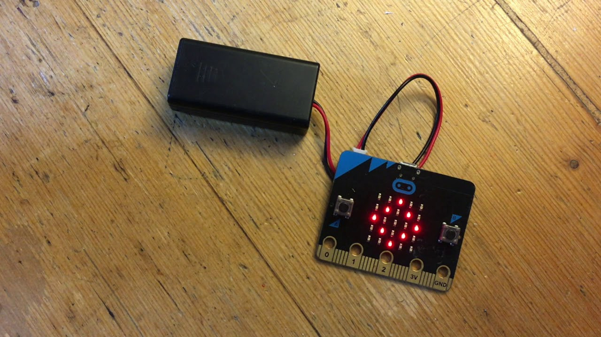
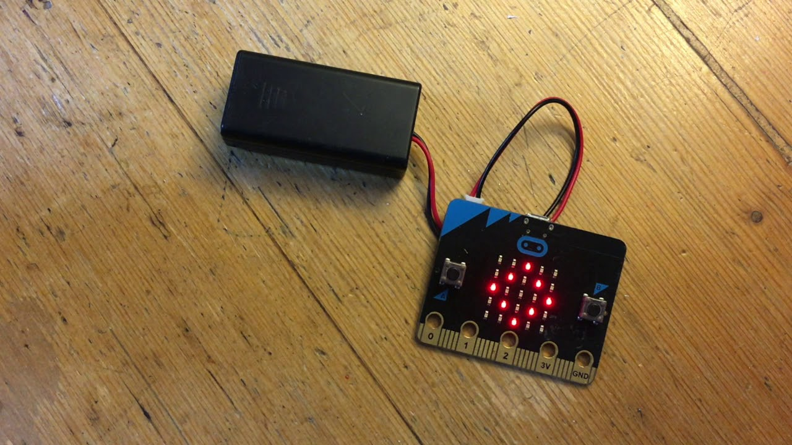

Introdução
A micro:bit é uma pequena placa eletrônica criada para ajudar estudantes a aprender programação, robótica e conceitos básicos de tecnologia de forma prática e divertida. Desenvolvida pela BBC, ela permite que qualquer pessoa, mesmo sem experiência prévia, consiga criar projetos interativos, como jogos, sistemas de alerta, semáforos, termômetros e pequenos robôs.
Essa plaquinha possui vários recursos integrados, como uma matriz de LEDs, botões, sensores de movimento, bússola digital e conexão via Bluetooth, o que possibilita criar projetos criativos que interagem com o ambiente. Além disso, a programação da micro:bit pode ser feita de maneira simples, usando blocos visuais (parecido com montar um quebra-cabeça) ou com linguagens como JavaScript e Python, facilitando o aprendizado tanto para iniciantes quanto para quem já tem alguma noção de programação. Por ser pequena, resistente e fácil de usar, a micro:bit é muito utilizada em escolas para introduzir alunos ao mundo da tecnologia, estimulando o raciocínio lógico, a criatividade e a resolução de problemas através da prática.
O que é o micro:bit?
O micro:bit é uma pequena placa eletrônica desenvolvida para o ensino de tecnologia. Ele possui diversos componentes integrados, como botões, sensores, entradas e uma matriz de LEDs.
Seu principal objetivo é tornar o aprendizado mais acessível e prático, permitindo que alunos criem projetos reais mesmo sem conhecimentos avançados.
O Sensor de Luz
O sensor de luz é um componente que permite que a micro:bit perceba a quantidade de claridade no ambiente ao seu redor. Ele funciona usando os próprios LEDs da placa, que conseguem “sentir” quanta luz está chegando neles. Assim, a micro:bit pode diferenciar se o ambiente está claro ou escuro e reagir a isso por meio de programação. Com o sensor de luz, é possível criar vários projetos interessantes, como uma luz que acende automaticamente quando escurece, um alarme que dispara se alguém apagar a luz do ambiente, ou um sistema que muda o comportamento conforme a claridade do local. Isso ajuda a entender, na prática, como sensores funcionam e como a tecnologia pode interagir com o mundo real. Esse tipo de recurso é muito usado em projetos de robótica e automação, pois mostra como dispositivos eletrônicos podem “enxergar” o ambiente e tomar decisões de acordo com a luz disponível, tornando os projetos mais inteligentes e interativos.
 

Como o Sensor de Luz Funciona?
O funcionamento do sensor de luz da micro:bit acontece por meio dos próprios LEDs da placa, que além de emitirem luz também conseguem captar a luminosidade do ambiente. Quando a luz do local aumenta ou diminui, os LEDs “sentem” essa variação e a micro:bit transforma essa informação em um valor numérico que pode ser lido no programa. Esse valor geralmente vai de 0 a 255, onde números menores indicam ambientes mais escuros e números maiores indicam ambientes mais claros. Com isso, o programador consegue criar condições, como: “se estiver escuro, acenda um LED” ou “se estiver claro, mostre uma mensagem na tela”. Assim, a placa passa a tomar decisões com base na luz do ambiente. Na prática, esse funcionamento mostra como sensores convertem estímulos do mundo real (neste caso, a luz) em dados que o computador entende. Isso ajuda muito no aprendizado de robótica e programação, pois conecta o código com algo que o aluno consegue ver e testar no dia a dia.
Os valores geralmente variam entre 0 e 255, onde valores baixos indicam pouca luz e valores altos indicam ambientes bem iluminados.
Aplicações do Sensor de Luz
As aplicações do sensor de luz da micro:bit são bem variadas e ajudam a criar projetos interativos que reagem ao ambiente. Com ele, é possível programar a placa para acender LEDs automaticamente quando o local fica escuro, simulando o funcionamento de postes de iluminação ou luzes automáticas de casa. Também dá para criar alarmes que disparam quando a luz é apagada ou quando alguém cobre o sensor. Outra aplicação comum é em jogos e desafios educativos, nos quais o jogador precisa mudar a iluminação para controlar ações no programa, como iniciar uma fase ao iluminar a placa ou ganhar pontos ao encontrar o nível certo de luz. Isso torna o aprendizado mais divertido e ajuda a entender como sensores funcionam na prática. Além disso, o sensor de luz pode ser usado em projetos de automação e sustentabilidade, como sistemas que evitam gastar energia à toa, ligando dispositivos apenas quando está escuro. Essas aplicações mostram como a programação pode ser usada para resolver problemas do dia a dia e criar soluções simples, porém inteligentes.
- Acendimento automático de luzes
- Economia de energia elétrica
- Alarmes baseados em luminosidade
- Projetos científicos escolares
- Automação simples
Conclusão
Em conclusão, o uso da micro:bit junto com o sensor de luz mostra como a tecnologia pode ser aprendida de forma prática e acessível. Através de projetos simples, é possível entender como sensores funcionam, como a programação controla o comportamento dos dispositivos e como tudo isso se conecta com situações do dia a dia. Além de facilitar o aprendizado de robótica e programação, esses recursos ajudam a desenvolver o raciocínio lógico, a criatividade e a capacidade de resolver problemas. Ao experimentar, errar e testar novamente, o aluno aprende de forma mais natural e divertida, percebendo que a tecnologia não é algo distante, mas algo que pode ser criado por ele mesmo. Assim, a micro:bit se torna uma ferramenta importante na educação, pois transforma o aprendizado em uma experiência prática, estimulante e útil para o presente e para o futuro.
Por meio desse projeto, foi possível entender o funcionamento do sensor e suas aplicações no dia a dia, tornando o aprendizado mais prático e interessante.